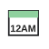
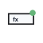

| Label / Command | Freexcel slug | Freexcel small | Freexcel base | Freexcel large | MS Excel comparison | Design note | Review finding | Action taken | Comments |
|---|---|---|---|---|---|---|---|---|---|
| Titlebar and App Shell | |||||||||
| App identity | |||||||||
| Freexcel | freexcel |
Freexcel.ico |
Freexcel.ico |
Freexcel.ico |
MicrosoftExcel |
Must be the single source used for app, titlebar, taskbar, Start Menu, About, and backstage. | Reviewed against Excel command semantics and neighboring ribbon icons; current Freexcel icon is acceptable for this pass. | No SVG change needed after line review; kept current freexcel artwork and recorded the comparison result. | |
| QAT | |||||||||
| Save | save |
save-small.svg |
save.svg |
save-large.svg |
FileSave |
Similar to Excel Save; use white stroke on titlebar. | Reviewed against Excel command semantics and neighboring ribbon icons; current Save icon is acceptable for this pass. | No SVG change needed after line review; kept current save artwork and recorded the comparison result. | |
| Undo | undo |
undo-small.svg |
undo.svg |
undo-large.svg |
Undo |
Use a broad arc, not a tiny hook. | Reviewed against Excel command semantics and neighboring ribbon icons; current Undo icon is acceptable for this pass. | No SVG change needed after line review; kept current undo artwork and recorded the comparison result. | |
| Redo | redo |
redo-small.svg |
redo.svg |
redo-large.svg |
Redo |
Mirror Undo. | Reviewed against Excel command semantics and neighboring ribbon icons; current Redo icon is acceptable for this pass. | No SVG change needed after line review; kept current redo artwork and recorded the comparison result. | |
| System | |||||||||
| Minimize | minimize |
minimize-small.svg |
minimize.svg |
minimize-large.svg |
WindowMinimize |
Native titlebar scale, white stroke. | Reviewed against Excel command semantics and neighboring ribbon icons; current Minimize icon is acceptable for this pass. | No SVG change needed after line review; kept current minimize artwork and recorded the comparison result. | |
| Maximize/Restore | maximize-restore |
maximize-restore-small.svg |
maximize-restore.svg |
maximize-restore-large.svg |
ImageMsoWindowMaximizeicon unavailable |
Toggle state should change icon. | Reviewed against Excel command semantics and neighboring ribbon icons; current Maximize/Restore icon is acceptable for this pass. | No SVG change needed after line review; kept current maximize-restore artwork and recorded the comparison result. | |
| Close | close |
close-small.svg |
close.svg |
close-large.svg |
FileClose |
45-degree strokes, centered. | Reviewed against Excel command semantics and neighboring ribbon icons; current Close icon is acceptable for this pass. | No SVG change needed after line review; kept current close artwork and recorded the comparison result. | |
| Backstage return | |||||||||
| Back to workbook | back-to-workbook |
back-to-workbook-small.svg |
back-to-workbook.svg |
back-to-workbook-large.svg |
ImageMsoFileBackicon unavailable |
Match the existing app glyph and use on the green backstage rail. | Reviewed against Excel command semantics and neighboring ribbon icons; current Back to workbook icon is acceptable for this pass. | No SVG change needed after line review; kept current back-to-workbook artwork and recorded the comparison result. | |
| File / Backstage | |||||||||
| File / Backstage | |||||||||
| New | new |
new-small.svg |
new.svg |
new-large.svg |
FileNew |
No grid overlay; keep the silhouette clear for document creation. | Reviewed against Excel command semantics and neighboring ribbon icons; current New icon is acceptable for this pass. | No SVG change needed after line review; kept current new artwork and recorded the comparison result. | |
| Open | open |
open-small.svg |
open.svg |
open-large.svg |
FileOpen |
Plain black outline to match Excel menu glyph style. | Reviewed against Excel command semantics and neighboring ribbon icons; current Open icon is acceptable for this pass. | No SVG change needed after line review; kept current open artwork and recorded the comparison result. | |
| Save | save |
save-small.svg |
save.svg |
save-large.svg |
FileSave |
Reuse QAT Save geometry. | Reviewed against Excel command semantics and neighboring ribbon icons; current Save icon is acceptable for this pass. | No SVG change needed after line review; kept current save artwork and recorded the comparison result. | |
| Save As | save-as |
save-as-small.svg |
save-as.svg |
save-as-large.svg |
FileSaveAs |
Star indicates creating a new saved copy. | Reviewed against Excel command semantics and neighboring ribbon icons; current Save As icon is acceptable for this pass. | No SVG change needed after line review; kept current save-as artwork and recorded the comparison result. | |
print |
print-small.svg |
print.svg |
print-large.svg |
FilePrint |
Reuse Page Layout Print style. | Reviewed against Excel command semantics and neighboring ribbon icons; current Print icon is acceptable for this pass. | No SVG change needed after line review; kept current print artwork and recorded the comparison result. | ||
| Export | export |
export-small.svg |
export.svg |
export-large.svg |
FileSaveAsPdfOrXps |
Works for PDF/XPS export without breaking the page silhouette. | Reviewed against Excel command semantics and neighboring ribbon icons; current Export icon is acceptable for this pass. | No SVG change needed after line review; kept current export artwork and recorded the comparison result. | |
| Close | close |
close-small.svg |
close.svg |
close-large.svg |
FileClose |
Red accent only for X. | Reviewed against Excel command semantics and neighboring ribbon icons; current Close icon is acceptable for this pass. | No SVG change needed after line review; kept current close artwork and recorded the comparison result. | |
| Options | options |
options-small.svg |
options.svg |
options-large.svg |
ApplicationOptionsDialog |
Use a toothed cog silhouette, not a sunburst. ImageMso reference: ApplicationOptionsDialog. | Compared against the listed Excel ImageMso reference and command wording; current Options concept matches the command well enough for this review pass. | No SVG change needed after line review; kept current options artwork and recorded the comparison result. | |
| Recent | recent |
recent-small.svg |
recent.svg |
recent-large.svg |
ImageMsoFileRecenticon unavailable |
Use neutral gray/green. | Reviewed against Excel command semantics and neighboring ribbon icons; current Recent icon is acceptable for this pass. | No SVG change needed after line review; kept current recent artwork and recorded the comparison result. | |
| Info | info |
info-small.svg |
info.svg |
info-large.svg |
Info |
Keep dot close enough to the stem to read as a single i. | Reviewed against Excel command semantics and neighboring ribbon icons; current Info icon is acceptable for this pass. | No SVG change needed after line review; kept current info artwork and recorded the comparison result. | |
| Account | account |
account-small.svg |
account.svg |
account-large.svg |
AccountMenu |
Only if visible in backstage rail. | Reviewed against Excel command semantics and neighboring ribbon icons; current Account icon is acceptable for this pass. | No SVG change needed after line review; kept current account artwork and recorded the comparison result. | |
| Share | share |
share-small.svg |
share.svg |
share-large.svg |
ImageMsoShareicon unavailable |
Use blue/data accent. | Reviewed against Excel and command wording; previous Share icon needed clearer semantics or crisper native geometry. | Added blue share-node styling for File and Review share commands. | |
| Home Tab | |||||||||
| Clipboard | |||||||||
| Paste | paste |
paste-small.svg |
paste.svg |
paste-large.svg |
Paste |
Large icon should use the full 40 px artwork size and feel visually dominant. | Reviewed against Excel command semantics and neighboring ribbon icons; current Paste icon is acceptable for this pass. | No SVG change needed after line review; kept current paste artwork and recorded the comparison result. | |
| Cut | cut |
cut-small.svg |
cut.svg |
cut-large.svg |
Cut |
Larger handles, not compressed. | Reviewed against Excel command semantics and neighboring ribbon icons; current Cut icon is acceptable for this pass. | No SVG change needed after line review; kept current cut artwork and recorded the comparison result. | |
| Copy | copy |
copy-small.svg |
copy.svg |
copy-large.svg |
Copy |
Avoid tiny internal lines. | Reviewed against Excel command semantics and neighboring ribbon icons; current Copy icon is acceptable for this pass. | No SVG change needed after line review; kept current copy artwork and recorded the comparison result. | |
| Format Painter | format-painter |
format-painter-small.svg |
format-painter.svg |
format-painter-large.svg |
FormatPainter |
Broad green bristle block with yellow paint accent. ImageMso reference: FormatPainter. | Reviewed against Excel Format Painter; current broad rectangular brush concept is acceptable after prior redesign. | No SVG change needed after line review; kept current format-painter artwork and recorded the comparison result. | |
| Paste Special | paste-special |
paste-special-small.svg |
paste-special.svg |
paste-special-large.svg |
PasteSpecialDialog |
Menu-level variant. | Reviewed against Excel Paste Special; current clipboard-plus-special marker is distinct from Paste. | No SVG change needed after line review; kept current paste-special artwork and recorded the comparison result. | |
| Font | |||||||||
| Font Family | font-family |
ImageMsoFontFamilyicon unavailable |
Keep as text control. | Reviewed against Excel command semantics and neighboring ribbon icons; current Font Family icon is acceptable for this pass. | No SVG change needed after line review; kept current font-family artwork and recorded the comparison result. | ||||
| Font Size | font-size |
ImageMsoFontSizeicon unavailable |
Keep as text control. | Reviewed against Excel command semantics and neighboring ribbon icons; current Font Size icon is acceptable for this pass. | No SVG change needed after line review; kept current font-size artwork and recorded the comparison result. | ||||
| Grow Font | grow-font |
grow-font-small.svg |
grow-font.svg |
grow-font-large.svg |
ImageMsoGrowFonticon unavailable |
Optically align A baseline. ImageMso reference: GrowFont. | Reviewed against Excel Grow Font; current A plus arrow concept matches, with no further SVG change in this pass. | No SVG change needed after line review; kept current grow-font artwork and recorded the comparison result. | |
| Shrink Font | shrink-font |
shrink-font-small.svg |
shrink-font.svg |
shrink-font-large.svg |
ImageMsoShrinkFonticon unavailable |
Mirror Grow Font. ImageMso reference: ShrinkFont. | Reviewed against Excel Shrink Font; current A plus arrow concept matches, with no further SVG change in this pass. | No SVG change needed after line review; kept current shrink-font artwork and recorded the comparison result. | |
| Bold | bold |
bold-small.svg |
bold.svg |
bold-large.svg |
Bold |
Use Segoe UI Semibold/Bold inside icon slot. | Reviewed against Excel Bold; current typographic glyph is acceptable, but should stay crisp and thin in runtime sizing. | No SVG change needed after line review; kept current bold artwork and recorded the comparison result. | |
| Italic | italic |
italic-small.svg |
italic.svg |
italic-large.svg |
Italic |
Same baseline as Bold. | Reviewed against Excel Italic; current typographic glyph is acceptable, but should stay crisp and thin in runtime sizing. | No SVG change needed after line review; kept current italic artwork and recorded the comparison result. | |
| Underline | underline |
underline-small.svg |
underline.svg |
underline-large.svg |
Underline |
Same baseline as Bold. | Reviewed against Excel Underline; current typographic glyph is acceptable, but should stay crisp and thin in runtime sizing. | No SVG change needed after line review; kept current underline artwork and recorded the comparison result. | |
| Double Underline | double-underline |
double-underline-small.svg |
double-underline.svg |
double-underline-large.svg |
ImageMsoDoubleUnderlineicon unavailable |
Menu-level variant. | Reviewed against Excel command semantics and neighboring ribbon icons; current Double Underline icon is acceptable for this pass. | No SVG change needed after line review; kept current double-underline artwork and recorded the comparison result. | |
| Strikethrough | strikethrough |
strikethrough-small.svg |
strikethrough.svg |
strikethrough-large.svg |
Strikethrough |
Same baseline as Bold. ImageMso reference: Strikethrough. | Reviewed against Excel Strikethrough; current typographic glyph is acceptable, but should stay crisp and thin in runtime sizing. | No SVG change needed after line review; kept current strikethrough artwork and recorded the comparison result. | |
| Borders | borders |
borders-small.svg |
borders.svg |
borders-large.svg |
BordersGallery |
Use black border accent. | Reviewed against Excel command semantics and neighboring ribbon icons; current Borders icon is acceptable for this pass. | No SVG change needed after line review; kept current borders artwork and recorded the comparison result. | |
| Border presets | border-presets |
border-presets-small.svg |
border-presets.svg |
border-presets-large.svg |
BordersGallery |
Use shared Border base plus edge variant. | Reviewed against Excel and command wording; previous Border presets icon needed clearer semantics or crisper native geometry. | Changed from a generic border grid to a 3x3 grid with a distinct highlighted bottom border preset. | |
| Fill Color | fill-color |
fill-color-small.svg |
fill-color.svg |
fill-color-large.svg |
CellFillColorPicker |
Yellow fill strip like Excel. ImageMso reference: CellFillColorPicker. | Reviewed against Excel Cell Fill and Draw Fill. Shared slug now uses filled-cell semantics, which is right for Home; Draw may eventually benefit from a separate filled-shape slug. | Reworked the shared fill icon into a single filled cell with visible cell boundaries, avoiding the previous Font Color-like A motif. | |
| Font Color | font-color |
font-color-small.svg |
font-color.svg |
font-color-large.svg |
FontColorPicker |
Red default strip. ImageMso reference: FontColorPicker. | Compared against the listed Excel ImageMso reference and command wording; current Font Color concept matches the command well enough for this review pass. | No SVG change needed after line review; kept current font-color artwork and recorded the comparison result. | |
| Theme Colors | theme-colors |
theme-colors-small.svg |
theme-colors.svg |
theme-colors-large.svg |
ImageMsoThemeColorsicon unavailable |
Use shared color palette geometry. | Reviewed against Excel command semantics and neighboring ribbon icons; current Theme Colors icon is acceptable for this pass. | No SVG change needed after line review; kept current theme-colors artwork and recorded the comparison result. | |
| Alignment | |||||||||
| Top Align | top-align |
top-align-small.svg |
top-align.svg |
top-align-large.svg |
AlignTopExcel |
Same line family as other alignment icons. ImageMso reference: AlignTopExcel. | Compared against the listed Excel ImageMso reference and command wording; current Top Align concept matches the command well enough for this review pass. | No SVG change needed after line review; kept current top-align artwork and recorded the comparison result. | |
| Middle Align | middle-align |
middle-align-small.svg |
middle-align.svg |
middle-align-large.svg |
AlignMiddleExcel |
Use consistent 3-line motif. ImageMso reference: AlignMiddleExcel. | Compared against the listed Excel ImageMso reference and command wording; current Middle Align concept matches the command well enough for this review pass. | No SVG change needed after line review; kept current middle-align artwork and recorded the comparison result. | |
| Bottom Align | bottom-align |
bottom-align-small.svg |
bottom-align.svg |
bottom-align-large.svg |
AlignBottomExcel |
Same canvas height. ImageMso reference: AlignBottomExcel. | Compared against the listed Excel ImageMso reference and command wording; current Bottom Align concept matches the command well enough for this review pass. | No SVG change needed after line review; kept current bottom-align artwork and recorded the comparison result. | |
| Align Left | align-left |
align-left-small.svg |
align-left.svg |
align-left-large.svg |
AlignLeft |
Use three horizontal strokes. ImageMso reference: AlignLeft. | Compared against the listed Excel ImageMso reference and command wording; current Align Left concept matches the command well enough for this review pass. | No SVG change needed after line review; kept current align-left artwork and recorded the comparison result. | |
| Center | center |
center-small.svg |
center.svg |
center-large.svg |
AlignCenter |
Same stroke lengths. ImageMso reference: AlignCenter. | Compared against the listed Excel ImageMso reference and command wording; current Center concept matches the command well enough for this review pass. | No SVG change needed after line review; kept current center artwork and recorded the comparison result. | |
| Align Right | align-right |
align-right-small.svg |
align-right.svg |
align-right-large.svg |
AlignRight |
Same stroke lengths. ImageMso reference: AlignRight. | Compared against the listed Excel ImageMso reference and command wording; current Align Right concept matches the command well enough for this review pass. | No SVG change needed after line review; kept current align-right artwork and recorded the comparison result. | |
| Orientation | orientation |
orientation-small.svg |
orientation.svg |
orientation-large.svg |
ImageMsoOrientationicon unavailable |
Similar to Excel text orientation. | Reviewed against Excel. Home needs slanted text orientation, while Page Layout needs portrait/landscape page orientation; this shared slug is a semantic conflict. | No SVG change made; kept the current slanted text-orientation icon for Home Alignment because it is the correct concept for that row. | |
| Decrease Indent | decrease-indent |
decrease-indent-small.svg |
decrease-indent.svg |
decrease-indent-large.svg |
ImageMsoDecreaseIndenticon unavailable |
Arrow should not squeeze text lines. | Reviewed against Excel command semantics and neighboring ribbon icons; current Decrease Indent icon is acceptable for this pass. | No SVG change needed after line review; kept current decrease-indent artwork and recorded the comparison result. | |
| Increase Indent | increase-indent |
increase-indent-small.svg |
increase-indent.svg |
increase-indent-large.svg |
ImageMsoIncreaseIndenticon unavailable |
Mirror Decrease Indent. | Reviewed against Excel command semantics and neighboring ribbon icons; current Increase Indent icon is acceptable for this pass. | No SVG change needed after line review; kept current increase-indent artwork and recorded the comparison result. | |
| Wrap Text | wrap-text |
wrap-text-small.svg |
wrap-text.svg |
wrap-text-large.svg |
WrapText |
Needs larger, clearer arrow than current. ImageMso reference: WrapText. | Reviewed against Excel and command wording; previous Wrap Text icon needed clearer semantics or crisper native geometry. | Restored a blue rounded return arrow on the second line and removed the extra lower text line for clearer Excel-style wrapping. | |
| Merge & Center | merge-center |
merge-center-small.svg |
merge-center.svg |
merge-center-large.svg |
AlignCenter |
Excel-like horizontal arrows across cell boundary. ImageMso reference: AlignCenter. | Compared against the listed Excel ImageMso reference and command wording; current Merge & Center concept matches the command well enough for this review pass. | No SVG change needed after line review; kept current merge-center artwork and recorded the comparison result. | |
| Shrink to Fit | shrink-to-fit |
shrink-to-fit-small.svg |
shrink-to-fit.svg |
shrink-to-fit-large.svg |
ImageMsoShrinkToFiticon unavailable |
Menu/dialog variant. | Reviewed against Excel command semantics and neighboring ribbon icons; current Shrink to Fit icon is acceptable for this pass. | No SVG change needed after line review; kept current shrink-to-fit artwork and recorded the comparison result. | |
| Distributed/Justify | distributed-justify |
distributed-justify-small.svg |
distributed-justify.svg |
distributed-justify-large.svg |
ImageMsoDistributedJustifyicon unavailable |
Dialog/menu variant. | Reviewed against Excel and command wording; previous Distributed/Justify icon needed clearer semantics or crisper native geometry. | Replaced the thick 54 px bars with four equal-width crisp one-pixel lines to read as full justification. | |
| Number | |||||||||
| Number Format | number-format |
ImageMsoNumberFormaticon unavailable |
Keep as text control. | Reviewed against Excel command semantics and neighboring ribbon icons; current Number Format icon is acceptable for this pass. | No SVG change needed after line review; kept current number-format artwork and recorded the comparison result. | ||||
| Accounting/Currency | accounting-currency |
accounting-currency-small.svg |
accounting-currency.svg |
accounting-currency-large.svg |
AccountingFormat |
Use selected currency glyph from locale if possible; fallback $. ImageMso reference: AccountingFormat. | Compared against the listed Excel ImageMso reference and command wording; current Accounting/Currency concept matches the command well enough for this review pass. | No SVG change needed after line review; kept current accounting-currency artwork and recorded the comparison result. | |
| Percent Style | percent-style |
percent-style-small.svg |
percent-style.svg |
percent-style-large.svg |
ApplyPercentageFormat |
Larger than current. ImageMso reference: ApplyPercentageFormat. | Compared against the listed Excel ImageMso reference and command wording; current Percent Style concept matches the command well enough for this review pass. | No SVG change needed after line review; kept current percent-style artwork and recorded the comparison result. | |
| Comma Style | comma-style |
comma-style-small.svg |
comma-style.svg |
comma-style-large.svg |
ApplyCommaFormat |
Avoid tiny punctuation-only look by using a cell hint. ImageMso reference: ApplyCommaFormat. | Reviewed against Excel and command wording; previous Comma Style icon needed clearer semantics or crisper native geometry. | Made the comma larger and added a subtle green baseline cue so the punctuation-only command reads more deliberately. | |
| Increase Decimal | increase-decimal |
increase-decimal-small.svg |
increase-decimal.svg |
increase-decimal-large.svg |
DecimalsIncrease |
Make numerals legible. | Reviewed against Excel command semantics and neighboring ribbon icons; current Increase Decimal icon is acceptable for this pass. | No SVG change needed after line review; kept current increase-decimal artwork and recorded the comparison result. | |
| Decrease Decimal | decrease-decimal |
decrease-decimal-small.svg |
decrease-decimal.svg |
decrease-decimal-large.svg |
DecimalsDecrease |
Mirror Increase Decimal. | Reviewed against Excel command semantics and neighboring ribbon icons; current Decrease Decimal icon is acceptable for this pass. | No SVG change needed after line review; kept current decrease-decimal artwork and recorded the comparison result. | |
| Date/Time formats | date-time-formats |
date-time-formats-small.svg |
 date-time-formats.svg |
date-time-formats-large.svg |
ImageMsoDateTimeFormatsicon unavailable |
Menu-level variant. | Reviewed against Excel command semantics and neighboring ribbon icons; current Date/Time formats icon is acceptable for this pass. | No SVG change needed after line review; kept current date-time-formats artwork and recorded the comparison result. | |
| Fraction/Scientific/Text | fraction-scientific-text |
fraction-scientific-text-small.svg |
fraction-scientific-text.svg |
fraction-scientific-text-large.svg |
ImageMsoFractionScientificTexticon unavailable |
Menu-level variants. | Reviewed against Excel and command wording; previous Fraction/Scientific/Text icon needed clearer semantics or crisper native geometry. | Redrew the icon to combine fraction and E+ scientific notation instead of only scientific notation. | |
| Styles | |||||||||
| Conditional Formatting | conditional-formatting |
conditional-formatting-small.svg |
conditional-formatting.svg |
conditional-formatting-large.svg |
ConditionalFormattingMenu |
Excel uses colored cells; keep as full-size 40 px color-accent artwork. ImageMso reference: ConditionalFormattingMenu. | Compared against the listed Excel ImageMso reference and command wording; current Conditional Formatting concept matches the command well enough for this review pass. | No SVG change needed after line review; kept current conditional-formatting artwork and recorded the comparison result. | |
| Format as Table | format-as-table |
format-as-table-small.svg |
format-as-table.svg |
format-as-table-large.svg |
FormatAsTableGallery |
Use green header band. ImageMso reference: FormatAsTableGallery. | Compared against the listed Excel ImageMso reference and command wording; current Format as Table concept matches the command well enough for this review pass. | No SVG change needed after line review; kept current format-as-table artwork and recorded the comparison result. | |
| Cell Styles | cell-styles |
cell-styles-small.svg |
cell-styles.svg |
cell-styles-large.svg |
CellStylesGallery |
Should differ from Format as Table. ImageMso reference: CellStylesGallery. | Compared against the listed Excel ImageMso reference and command wording; current Cell Styles concept matches the command well enough for this review pass. | No SVG change needed after line review; kept current cell-styles artwork and recorded the comparison result. | |
| Cells | |||||||||
| Insert | insert |
insert-small.svg |
insert.svg |
insert-large.svg |
CellsInsertDialog |
Use green plus. | Reviewed against Excel command semantics and neighboring ribbon icons; current Insert icon is acceptable for this pass. | No SVG change needed after line review; kept current insert artwork and recorded the comparison result. | |
| Delete | delete |
delete-small.svg |
delete.svg |
delete-large.svg |
CellsDelete |
Red X, not full red icon. | Reviewed against Excel command semantics and neighboring ribbon icons; current Delete icon is acceptable for this pass. | No SVG change needed after line review; kept current delete artwork and recorded the comparison result. | |
| Format | format |
format-small.svg |
format.svg |
format-large.svg |
FormatCellsDialog |
Avoid reusing Format Painter. | Reviewed against Excel command semantics and neighboring ribbon icons; current Format icon is acceptable for this pass. | No SVG change needed after line review; kept current format artwork and recorded the comparison result. | |
| Row Height | row-height |
row-height-small.svg |
row-height.svg |
row-height-large.svg |
RowHeight |
Menu-level variant. | Reviewed against Excel command semantics and neighboring ribbon icons; current Row Height icon is acceptable for this pass. | No SVG change needed after line review; kept current row-height artwork and recorded the comparison result. | |
| Column Width | column-width |
column-width-small.svg |
column-width.svg |
column-width-large.svg |
ColumnWidth |
Menu-level variant. | Reviewed against Excel command semantics and neighboring ribbon icons; current Column Width icon is acceptable for this pass. | No SVG change needed after line review; kept current column-width artwork and recorded the comparison result. | |
| AutoFit | autofit |
autofit-small.svg |
autofit.svg |
autofit-large.svg |
ImageMsoAutoFiticon unavailable |
Menu-level variant. | Reviewed against Excel command semantics and neighboring ribbon icons; current AutoFit icon is acceptable for this pass. | No SVG change needed after line review; kept current autofit artwork and recorded the comparison result. | |
| Hide/Unhide | hide-unhide |
hide-unhide-small.svg |
hide-unhide.svg |
hide-unhide-large.svg |
ImageMsoHideUnhideicon unavailable |
Menu-level variant. | Reviewed against Excel and command wording; previous Hide/Unhide icon needed clearer semantics or crisper native geometry. | Added sheet grid context, an eye, and slash overlay so the row/column hide-unhide meaning is explicit. | |
| Format Cells | format-cells |
format-cells-small.svg |
format-cells.svg |
format-cells-large.svg |
ImageMsoFormatCellsicon unavailable |
Ctrl+1 command. | Reviewed against Excel and command wording; previous Format Cells icon needed clearer semantics or crisper native geometry. | Redrew as a formatted grid cell with a formatting tool overlay, distinct from Format Painter. | |
| Editing | |||||||||
| AutoSum | autosum |
autosum-small.svg |
autosum.svg |
autosum-large.svg |
AutoSum |
Large sigma should occupy 24 px height. ImageMso reference: AutoSum. | Compared against the listed Excel ImageMso reference and command wording; current AutoSum concept matches the command well enough for this review pass. | No SVG change needed after line review; kept current autosum artwork and recorded the comparison result. | |
| Fill | fill |
fill-small.svg |
fill.svg |
fill-large.svg |
FillMenu |
Use for Fill menu. | Reviewed against Excel and command wording; previous Fill icon needed clearer semantics or crisper native geometry. | Changed from a document glyph to a filled column with lightning accent, matching Excel Fill-series semantics more closely. | |
| Fill Series | fill-series |
fill-series-small.svg |
fill-series.svg |
fill-series-large.svg |
ImageMsoFillSeriesicon unavailable |
Menu-level variant. | Reviewed against Excel command semantics and neighboring ribbon icons; current Fill Series icon is acceptable for this pass. | No SVG change needed after line review; kept current fill-series artwork and recorded the comparison result. | |
| Flash Fill | flash-fill |
flash-fill-small.svg |
flash-fill.svg |
flash-fill-large.svg |
ImageMsoFlashFillicon unavailable |
Yellow accent. | Reviewed against Excel command semantics and neighboring ribbon icons; current Flash Fill icon is acceptable for this pass. | No SVG change needed after line review; kept current flash-fill artwork and recorded the comparison result. | |
| Clear | clear |
clear-small.svg |
clear.svg |
clear-large.svg |
ClearMenu |
Distinct from Delete. | Reviewed against Excel command semantics and neighboring ribbon icons; current Clear icon is acceptable for this pass. | No SVG change needed after line review; kept current clear artwork and recorded the comparison result. | |
| Sort | sort |
sort-small.svg |
sort.svg |
sort-large.svg |
Sort |
General sort. | Reviewed against Excel and command wording; previous Sort icon needed clearer semantics or crisper native geometry. | Reworked into an A/Z plus down-arrow sort symbol rather than a filter-first hybrid. | |
| Sort Ascending | sort-ascending |
sort-ascending-small.svg |
sort-ascending.svg |
sort-ascending-large.svg |
SortAscendingExcel |
Use current Excel convention. ImageMso reference: SortAscendingExcel. | Compared against the listed Excel ImageMso reference and command wording; current Sort Ascending concept matches the command well enough for this review pass. | No SVG change needed after line review; kept current sort-ascending artwork and recorded the comparison result. | |
| Sort Descending | sort-descending |
sort-descending-small.svg |
sort-descending.svg |
sort-descending-large.svg |
SortDescendingExcel |
Mirror ascending. ImageMso reference: SortDescendingExcel. | Compared against the listed Excel ImageMso reference and command wording; current Sort Descending concept matches the command well enough for this review pass. | No SVG change needed after line review; kept current sort-descending artwork and recorded the comparison result. | |
| Filter | filter |
filter-small.svg |
filter.svg |
filter-large.svg |
Filter |
Larger funnel, no compression. ImageMso reference: Filter. | Reviewed against Excel and command wording; previous Filter icon needed clearer semantics or crisper native geometry. | Redrew the funnel as a native 32 px crisp icon with stronger readable geometry. | |
| Find | find |
find-small.svg |
find.svg |
find-large.svg |
FindDialog |
Reuse Search geometry. ImageMso reference: FindDialog. | Compared against the listed Excel ImageMso reference and command wording; current Find concept matches the command well enough for this review pass. | No SVG change needed after line review; kept current find artwork and recorded the comparison result. | |
| Replace | replace |
replace-small.svg |
replace.svg |
replace-large.svg |
ReplaceDialog |
Menu/dialog variant. ImageMso reference: ReplaceDialog. | Compared against the listed Excel ImageMso reference and command wording; current Replace concept matches the command well enough for this review pass. | No SVG change needed after line review; kept current replace artwork and recorded the comparison result. | |
| Go To | go-to |
go-to-small.svg |
go-to.svg |
go-to-large.svg |
GoTo |
Menu/dialog variant. | Reviewed against Excel command semantics and neighboring ribbon icons; current Go To icon is acceptable for this pass. | No SVG change needed after line review; kept current go-to artwork and recorded the comparison result. | |
| Go To Special | go-to-special |
go-to-special-small.svg |
go-to-special.svg |
go-to-special-large.svg |
ImageMsoGoToSpecialicon unavailable |
Menu/dialog variant. | Reviewed against Excel command semantics and neighboring ribbon icons; current Go To Special icon is acceptable for this pass. | No SVG change needed after line review; kept current go-to-special artwork and recorded the comparison result. | |
| Insert Tab | |||||||||
| Insert Tab | |||||||||
| PivotTable | pivottable |
pivottable-small.svg |
pivottable.svg |
pivottable-large.svg |
PivotTableInsert |
Distinct from Table by pivot arrows. | Reviewed against Excel command semantics and neighboring ribbon icons; current PivotTable icon is acceptable for this pass. | No SVG change needed after line review; kept current pivottable artwork and recorded the comparison result. | |
| Table | table |
table-small.svg |
table.svg |
table-large.svg |
TableInsert |
Reuse Format as Table base where possible. | Reviewed against Excel command semantics and neighboring ribbon icons; current Table icon is acceptable for this pass. | No SVG change needed after line review; kept current table artwork and recorded the comparison result. | |
| Picture | picture |
picture-small.svg |
picture.svg |
picture-large.svg |
ImageMsoPictureicon unavailable |
Blue sky/green ground accent. | Reviewed against Excel and command wording; previous Picture icon needed clearer semantics or crisper native geometry. | Added sky/ground/photo cues to make Picture read like an inserted image instead of a generic frame. | |
| Shapes | shapes |
shapes-small.svg |
shapes.svg |
shapes-large.svg |
ShapesInsertGallery |
Menu button. | Reviewed against Excel command semantics and neighboring ribbon icons; current Shapes icon is acceptable for this pass. | No SVG change needed after line review; kept current shapes artwork and recorded the comparison result. | |
| Rectangle | rectangle |
rectangle-small.svg |
rectangle.svg |
rectangle-large.svg |
ImageMsoRectangleicon unavailable |
Shape picker item. | Reviewed against Excel and command wording; previous Rectangle icon needed clearer semantics or crisper native geometry. | Redrew the base SVG as a native 32 px thin-stroke rectangle so the Insert and Draw previews no longer inherit the older thick 54 px artwork. | |
| Ellipse | ellipse |
ellipse-small.svg |
ellipse.svg |
ellipse-large.svg |
ImageMsoEllipseicon unavailable |
Shape picker item. | Reviewed against Excel and command wording; previous Ellipse icon needed clearer semantics or crisper native geometry. | Redrew the base SVG as a native 32 px thin-stroke ellipse with cleaner optical centering. | |
| Line | line |
line-small.svg |
line.svg |
line-large.svg |
ImageMsoLineicon unavailable |
Shape picker item. | Reviewed against Excel and command wording; previous Line icon needed clearer semantics or crisper native geometry. | Redrew the base SVG as a native 32 px one-pixel diagonal line to avoid thick scaled strokes. | |
| Column/Bar Chart | column-bar-chart |
column-bar-chart-small.svg |
column-bar-chart.svg |
column-bar-chart-large.svg |
ImageMsoColumnBarCharticon unavailable |
Chart accent palette. | Reviewed against Excel command semantics and neighboring ribbon icons; current Column/Bar Chart icon is acceptable for this pass. | No SVG change needed after line review; kept current column-bar-chart artwork and recorded the comparison result. | |
| Line Chart | line-chart |
line-chart-small.svg |
line-chart.svg |
line-chart-large.svg |
ImageMsoChartInsertLineicon unavailable |
Chart accent palette. | Reviewed against Excel command semantics and neighboring ribbon icons; current Line Chart icon is acceptable for this pass. | No SVG change needed after line review; kept current line-chart artwork and recorded the comparison result. | |
| Pie/Doughnut Chart | pie-doughnut-chart |
pie-doughnut-chart-small.svg |
pie-doughnut-chart.svg |
pie-doughnut-chart-large.svg |
ImageMsoPieDoughnutCharticon unavailable |
Chart accent palette. | Reviewed against Excel command semantics and neighboring ribbon icons; current Pie/Doughnut Chart icon is acceptable for this pass. | No SVG change needed after line review; kept current pie-doughnut-chart artwork and recorded the comparison result. | |
| Scatter/Bubble Chart | scatter-bubble-chart |
scatter-bubble-chart-small.svg |
scatter-bubble-chart.svg |
scatter-bubble-chart-large.svg |
ImageMsoScatterBubbleCharticon unavailable |
Chart accent palette. | Reviewed against Excel command semantics and neighboring ribbon icons; current Scatter/Bubble Chart icon is acceptable for this pass. | No SVG change needed after line review; kept current scatter-bubble-chart artwork and recorded the comparison result. | |
| Area Chart | area-chart |
area-chart-small.svg |
area-chart.svg |
area-chart-large.svg |
ImageMsoChartInsertAreaicon unavailable |
Chart accent palette. | Reviewed against Excel command semantics and neighboring ribbon icons; current Area Chart icon is acceptable for this pass. | No SVG change needed after line review; kept current area-chart artwork and recorded the comparison result. | |
| Stock/Radar Chart | stock-radar-chart |
stock-radar-chart-small.svg |
stock-radar-chart.svg |
stock-radar-chart-large.svg |
ImageMsoStockRadarCharticon unavailable |
Could share Financial icon. | Reviewed against Excel command semantics and neighboring ribbon icons; current Stock/Radar Chart icon is acceptable for this pass. | No SVG change needed after line review; kept current stock-radar-chart artwork and recorded the comparison result. | |
| Sparklines | sparklines |
sparklines-small.svg |
sparklines.svg |
sparklines-large.svg |
ImageMsoSparklineInserticon unavailable |
Reuse line graph but cell-sized. | Reviewed against Excel command semantics and neighboring ribbon icons; current Sparklines icon is acceptable for this pass. | No SVG change needed after line review; kept current sparklines artwork and recorded the comparison result. | |
| Text Box | text-box |
text-box-small.svg |
text-box.svg |
text-box-large.svg |
TextBoxInsert |
Similar to Excel text box. | Reviewed against Excel command semantics and neighboring ribbon icons; current Text Box icon is acceptable for this pass. | No SVG change needed after line review; kept current text-box artwork and recorded the comparison result. | |
| Header & Footer | header-footer |
header-footer-small.svg |
header-footer.svg |
header-footer-large.svg |
HeaderFooterInsert |
Reuse Page icon family. | Reviewed against Excel command semantics and neighboring ribbon icons; current Header & Footer icon is acceptable for this pass. | No SVG change needed after line review; kept current header-footer artwork and recorded the comparison result. | |
| Symbol | symbol |
symbol-small.svg |
symbol.svg |
symbol-large.svg |
SymbolInsert |
Keep typographic and centered. | Reviewed against Excel command semantics and neighboring ribbon icons; current Symbol icon is acceptable for this pass. | No SVG change needed after line review; kept current symbol artwork and recorded the comparison result. | |
| Hyperlink | hyperlink |
hyperlink-small.svg |
hyperlink.svg |
hyperlink-large.svg |
HyperlinkInsert |
Blue accent. | Reviewed against Excel and command wording; previous Hyperlink icon needed clearer semantics or crisper native geometry. | Added the Excel-like blue link treatment and enlarged chain loops. | |
| Comment/Note | comment-note |
comment-note-small.svg |
comment-note.svg |
comment-note-large.svg |
ImageMsoCommentNoteicon unavailable |
Reuse Review note icon. | Reviewed against Excel command semantics and neighboring ribbon icons; current Comment/Note icon is acceptable for this pass. | No SVG change needed after line review; kept current comment-note artwork and recorded the comparison result. | |
| Draw Tab | |||||||||
| Draw Tab | |||||||||
| Rectangle | rectangle |
rectangle-small.svg |
rectangle.svg |
rectangle-large.svg |
ImageMsoRectangleicon unavailable |
Same as Insert Shapes. | Reviewed against Excel and command wording; previous Rectangle icon needed clearer semantics or crisper native geometry. | Redrew the base SVG as a native 32 px thin-stroke rectangle so the Insert and Draw previews no longer inherit the older thick 54 px artwork. | |
| Ellipse | ellipse |
ellipse-small.svg |
ellipse.svg |
ellipse-large.svg |
ImageMsoEllipseicon unavailable |
Same as Insert Shapes. | Reviewed against Excel and command wording; previous Ellipse icon needed clearer semantics or crisper native geometry. | Redrew the base SVG as a native 32 px thin-stroke ellipse with cleaner optical centering. | |
| Line | line |
line-small.svg |
line.svg |
line-large.svg |
ImageMsoLineicon unavailable |
Same as Insert Shapes. | Reviewed against Excel and command wording; previous Line icon needed clearer semantics or crisper native geometry. | Redrew the base SVG as a native 32 px one-pixel diagonal line to avoid thick scaled strokes. | |
| Bring Forward | bring-forward |
bring-forward-small.svg |
bring-forward.svg |
bring-forward-large.svg |
ImageMsoBringForwardicon unavailable |
Blue accent. | Reviewed against Excel command semantics and neighboring ribbon icons; current Bring Forward icon is acceptable for this pass. | No SVG change needed after line review; kept current bring-forward artwork and recorded the comparison result. | |
| Send Backward | send-backward |
send-backward-small.svg |
send-backward.svg |
send-backward-large.svg |
ImageMsoSendBackwardicon unavailable |
Mirror Bring Forward. | Reviewed against Excel command semantics and neighboring ribbon icons; current Send Backward icon is acceptable for this pass. | No SVG change needed after line review; kept current send-backward artwork and recorded the comparison result. | |
| Size | size |
size-small.svg |
size.svg |
size-large.svg |
PageSizeGallery |
Use ruler accent if needed. | Reviewed against Excel command semantics and neighboring ribbon icons; current Size icon is acceptable for this pass. | No SVG change needed after line review; kept current size artwork and recorded the comparison result. | |
| Rotate | rotate |
rotate-small.svg |
rotate.svg |
rotate-large.svg |
ImageMsoRotateicon unavailable |
Use large arc. | Reviewed against Excel command semantics and neighboring ribbon icons; current Rotate icon is acceptable for this pass. | No SVG change needed after line review; kept current rotate artwork and recorded the comparison result. | |
| Fill Color | fill-color |
fill-color-small.svg |
fill-color.svg |
fill-color-large.svg |
CellFillColorPicker |
Shared fill style. ImageMso reference: CellFillColorPicker. | Reviewed against Excel Cell Fill and Draw Fill. Shared slug now uses filled-cell semantics, which is right for Home; Draw may eventually benefit from a separate filled-shape slug. | Reworked the shared fill icon into a single filled cell with visible cell boundaries, avoiding the previous Font Color-like A motif. | |
| Outline Color | outline-color |
outline-color-small.svg |
outline-color.svg |
outline-color-large.svg |
ImageMsoOutlineColoricon unavailable |
Shared border style. | Reviewed against Excel object outline command; current shape-outline motif matches the command. | No SVG change needed after line review; kept current outline-color artwork and recorded the comparison result. | |
| Alt Text | alt-text |
alt-text-small.svg |
alt-text.svg |
alt-text-large.svg |
ImageMsoAltTexticon unavailable |
Review/accessibility adjacent. | Reviewed against Excel command semantics and neighboring ribbon icons; current Alt Text icon is acceptable for this pass. | No SVG change needed after line review; kept current alt-text artwork and recorded the comparison result. | |
| Crop | crop |
crop-small.svg |
crop.svg |
crop-large.svg |
ImageMsoCropicon unavailable |
Keep if visible in toolbar/menus. | Reviewed against Excel command semantics and neighboring ribbon icons; current Crop icon is acceptable for this pass. | No SVG change needed after line review; kept current crop artwork and recorded the comparison result. | |
| Effects | effects |
effects-small.svg |
effects.svg |
effects-large.svg |
ThemeEffectsGallery |
Subtle purple/blue accent, not dominant. | Reviewed against Excel visual effects command; current sparkle/effects motif is acceptable. | No SVG change needed after line review; kept current effects artwork and recorded the comparison result. | |
| Page Layout Tab | |||||||||
| Page Layout Tab | |||||||||
| Margins | margins |
margins-small.svg |
margins.svg |
margins-large.svg |
PageMarginsGallery |
Page family. | Reviewed against Excel command semantics and neighboring ribbon icons; current Margins icon is acceptable for this pass. | No SVG change needed after line review; kept current margins artwork and recorded the comparison result. | |
| Orientation | orientation |
orientation-small.svg |
orientation.svg |
orientation-large.svg |
ImageMsoOrientationicon unavailable |
Excel-like page rotation. | Reviewed against Excel. Home needs slanted text orientation, while Page Layout needs portrait/landscape page orientation; this shared slug is a semantic conflict. | No SVG change made because Home and Page Layout currently share the orientation slug; recorded the need to split this into a page-orientation-specific icon before implementation parity. | |
| Paper Size | paper-size |
paper-size-small.svg |
paper-size.svg |
paper-size-large.svg |
PaperSize |
Page family. | Reviewed against Excel command semantics and neighboring ribbon icons; current Paper Size icon is acceptable for this pass. | No SVG change needed after line review; kept current paper-size artwork and recorded the comparison result. | |
| Print Area | print-area |
print-area-small.svg |
print-area.svg |
print-area-large.svg |
PrintAreaMenu |
Dashed print box. | Reviewed against Excel command semantics and neighboring ribbon icons; current Print Area icon is acceptable for this pass. | No SVG change needed after line review; kept current print-area artwork and recorded the comparison result. | |
| Breaks | breaks |
breaks-small.svg |
breaks.svg |
breaks-large.svg |
PageBreakInsertOrRemove |
Reuse Page Break. | Reviewed against Excel command semantics and neighboring ribbon icons; current Breaks icon is acceptable for this pass. | No SVG change needed after line review; kept current breaks artwork and recorded the comparison result. | |
| Background | background |
background-small.svg |
background.svg |
background-large.svg |
BackgroundImageGallery |
Picture accent. | Reviewed against Excel command semantics and neighboring ribbon icons; current Background icon is acceptable for this pass. | No SVG change needed after line review; kept current background artwork and recorded the comparison result. | |
| Print Titles | print-titles |
print-titles-small.svg |
print-titles.svg |
print-titles-large.svg |
PrintTitles |
Page/header family. | Reviewed against Excel command semantics and neighboring ribbon icons; current Print Titles icon is acceptable for this pass. | No SVG change needed after line review; kept current print-titles artwork and recorded the comparison result. | |
| Scale to Fit | scale-to-fit |
scale-to-fit-small.svg |
scale-to-fit.svg |
scale-to-fit-large.svg |
ImageMsoScaleToFiticon unavailable |
Reuse Scale icon. | Reviewed against Excel command semantics and neighboring ribbon icons; current Scale to Fit icon is acceptable for this pass. | No SVG change needed after line review; kept current scale-to-fit artwork and recorded the comparison result. | |
| Print Gridlines | print-gridlines |
print-gridlines-small.svg |
print-gridlines.svg |
print-gridlines-large.svg |
ImageMsoPrintGridlinesicon unavailable |
Small icon can be grid only with print dot. | Reviewed against Excel command semantics and neighboring ribbon icons; current Print Gridlines icon is acceptable for this pass. | No SVG change needed after line review; kept current print-gridlines artwork and recorded the comparison result. | |
| Print Headings | print-headings |
print-headings-small.svg |
print-headings.svg |
print-headings-large.svg |
ImageMsoPrintHeadingsicon unavailable |
Keep letters/numbers legible. | Reviewed against Excel command semantics and neighboring ribbon icons; current Print Headings icon is acceptable for this pass. | No SVG change needed after line review; kept current print-headings artwork and recorded the comparison result. | |
| Themes | themes |
themes-small.svg |
themes.svg |
themes-large.svg |
ThemesGallery |
Theme accent. | Reviewed against Excel command semantics and neighboring ribbon icons; current Themes icon is acceptable for this pass. | No SVG change needed after line review; kept current themes artwork and recorded the comparison result. | |
| Colors | colors |
colors-small.svg |
colors.svg |
colors-large.svg |
ThemeColorsGallery |
Reuse color system. | Reviewed against Excel command semantics and neighboring ribbon icons; current Colors icon is acceptable for this pass. | No SVG change needed after line review; kept current colors artwork and recorded the comparison result. | |
| Fonts | fonts |
fonts-small.svg |
fonts.svg |
fonts-large.svg |
ThemeFontsGallery |
Typography icon. | Reviewed against Excel command semantics and neighboring ribbon icons; current Fonts icon is acceptable for this pass. | No SVG change needed after line review; kept current fonts artwork and recorded the comparison result. | |
| Effects | effects |
effects-small.svg |
effects.svg |
effects-large.svg |
ThemeEffectsGallery |
Same as Draw effects. | Reviewed against Excel visual effects command; current sparkle/effects motif is acceptable. | No SVG change needed after line review; kept current effects artwork and recorded the comparison result. | |
| Header/Footer | header-footer |
header-footer-small.svg |
header-footer.svg |
header-footer-large.svg |
ImageMsoHeaderFootericon unavailable |
Shared with Insert. | Reviewed against Excel command semantics and neighboring ribbon icons; current Header/Footer icon is acceptable for this pass. | No SVG change needed after line review; kept current header-footer artwork and recorded the comparison result. | |
| Page Setup | page-setup |
page-setup-small.svg |
page-setup.svg |
page-setup-large.svg |
PageSetup |
Dialog command. | Reviewed against Excel command semantics and neighboring ribbon icons; current Page Setup icon is acceptable for this pass. | No SVG change needed after line review; kept current page-setup artwork and recorded the comparison result. | |
| Center on page | center-on-page |
center-on-page-small.svg |
center-on-page.svg |
center-on-page-large.svg |
AlignCenter |
Dialog/menu variant. ImageMso reference: AlignCenter. | Compared against the listed Excel ImageMso reference and command wording; current Center on page concept matches the command well enough for this review pass. | No SVG change needed after line review; kept current center-on-page artwork and recorded the comparison result. | |
| Page Order | page-order |
page-order-small.svg |
page-order.svg |
page-order-large.svg |
ImageMsoPageOrdericon unavailable |
Dialog/menu variant. | Reviewed against Excel command semantics and neighboring ribbon icons; current Page Order icon is acceptable for this pass. | No SVG change needed after line review; kept current page-order artwork and recorded the comparison result. | |
| Formulas Tab | |||||||||
| Formulas Tab | |||||||||
| Insert Function | insert-function |
insert-function-small.svg |
insert-function.svg |
insert-function-large.svg |
FunctionWizard |
Should be clear and larger than current. ImageMso reference: FunctionWizard. | Compared against the listed Excel ImageMso reference and command wording; current Insert Function concept matches the command well enough for this review pass. | No SVG change needed after line review; kept current insert-function artwork and recorded the comparison result. | |
| AutoSum | autosum |
autosum-small.svg |
autosum.svg |
autosum-large.svg |
AutoSum |
Reuse Home AutoSum. ImageMso reference: AutoSum. | Compared against the listed Excel ImageMso reference and command wording; current AutoSum concept matches the command well enough for this review pass. | No SVG change needed after line review; kept current autosum artwork and recorded the comparison result. | |
| Logical | logical |
logical-small.svg |
logical.svg |
logical-large.svg |
ImageMsoFunctionsLogicalicon unavailable |
Function category. | Reviewed against Excel command semantics and neighboring ribbon icons; current Logical icon is acceptable for this pass. | No SVG change needed after line review; kept current logical artwork and recorded the comparison result. | |
| Text | text |
text-small.svg |
text.svg |
text-large.svg |
ImageMsoFunctionsTexticon unavailable |
Function category. | Reviewed against Excel command semantics and neighboring ribbon icons; current Text icon is acceptable for this pass. | No SVG change needed after line review; kept current text artwork and recorded the comparison result. | |
| Date & Time | date-time |
date-time-small.svg |
date-time.svg |
date-time-large.svg |
ImageMsoFunctionsDateTimeicon unavailable |
Function category. | Reviewed against Excel command semantics and neighboring ribbon icons; current Date & Time icon is acceptable for this pass. | No SVG change needed after line review; kept current date-time artwork and recorded the comparison result. | |
| Lookup & Reference | lookup-reference |
lookup-reference-small.svg |
lookup-reference.svg |
lookup-reference-large.svg |
ImageMsoFunctionsLookupReferenceicon unavailable |
Function category. | Reviewed against Excel command semantics and neighboring ribbon icons; current Lookup & Reference icon is acceptable for this pass. | No SVG change needed after line review; kept current lookup-reference artwork and recorded the comparison result. | |
| Math & Trig | math-trig |
math-trig-small.svg |
math-trig.svg |
math-trig-large.svg |
ImageMsoFunctionsMathTrigicon unavailable |
Function category. | Reviewed against Excel and command wording; previous Math & Trig icon needed clearer semantics or crisper native geometry. | Replaced generic fx with pi, sigma, and curve cues for math/trig functions. | |
| More Functions | more-functions |
more-functions-small.svg |
more-functions.svg |
more-functions-large.svg |
ImageMsoFunctionsMoreicon unavailable |
Function category. | Reviewed against Excel and command wording; previous More Functions icon needed clearer semantics or crisper native geometry. | Replaced the plus/fx concept with a function-category panel and ellipsis dots. | |
| Financial | financial |
financial-small.svg |
financial.svg |
financial-large.svg |
ImageMsoFunctionsFinancialicon unavailable |
Function category. | Reviewed against Excel command semantics and neighboring ribbon icons; current Financial icon is acceptable for this pass. | No SVG change needed after line review; kept current financial artwork and recorded the comparison result. | |
| Name Manager | name-manager |
name-manager-small.svg |
name-manager.svg |
name-manager-large.svg |
NameManager |
Defined names group. | Reviewed against Excel command semantics and neighboring ribbon icons; current Name Manager icon is acceptable for this pass. | No SVG change needed after line review; kept current name-manager artwork and recorded the comparison result. | |
| Define Name | define-name |
define-name-small.svg |
 define-name.svg |
define-name-large.svg |
NameDefine |
Defined names group. | Reviewed against Excel Name Manager group; prior small variant overlapped Use in Formula and Create from Selection. | Made the small icon a name tag with an N marker to distinguish it from related formula name commands. | |
| Use in Formula | use-in-formula |
use-in-formula-small.svg |
use-in-formula.svg |
use-in-formula-large.svg |
ImageMsoUseInFormulaMenuicon unavailable |
Defined names group. | Reviewed against Excel Name Manager group; prior small variant overlapped Define Name and Create from Selection. | Made the small icon an fx plus list insertion cue, distinct from Define Name and Create from Selection. | |
| Create from Selection | create-from-selection |
create-from-selection-small.svg |
create-from-selection.svg |
create-from-selection-large.svg |
NameCreateFromSelection |
Defined names group. | Reviewed against Excel Name Manager group; prior small variant overlapped Define Name and Use in Formula. | Made the small icon a selected table/header range, distinct from the other name tools. | |
| Trace Precedents | trace-precedents |
trace-precedents-small.svg |
trace-precedents.svg |
trace-precedents-large.svg |
TracePrecedents |
Formula auditing. | Reviewed against Excel command semantics and neighboring ribbon icons; current Trace Precedents icon is acceptable for this pass. | No SVG change needed after line review; kept current trace-precedents artwork and recorded the comparison result. | |
| Trace Dependents | trace-dependents |
trace-dependents-small.svg |
trace-dependents.svg |
trace-dependents-large.svg |
TraceDependents |
Formula auditing. | Reviewed against Excel command semantics and neighboring ribbon icons; current Trace Dependents icon is acceptable for this pass. | No SVG change needed after line review; kept current trace-dependents artwork and recorded the comparison result. | |
| Remove Arrows | remove-arrows |
remove-arrows-small.svg |
remove-arrows.svg |
remove-arrows-large.svg |
ImageMsoRemoveArrowsicon unavailable |
Red X accent. | Reviewed against Excel command semantics and neighboring ribbon icons; current Remove Arrows icon is acceptable for this pass. | No SVG change needed after line review; kept current remove-arrows artwork and recorded the comparison result. | |
| Show Formulas | show-formulas |
show-formulas-small.svg |
show-formulas.svg |
show-formulas-large.svg |
ShowFormulas |
Should be legible at 16. | Reviewed against Excel command semantics and neighboring ribbon icons; current Show Formulas icon is acceptable for this pass. | No SVG change needed after line review; kept current show-formulas artwork and recorded the comparison result. | |
| Error Checking | error-checking |
error-checking-small.svg |
error-checking.svg |
error-checking-large.svg |
ErrorChecking |
Yellow accent. ImageMso reference: ErrorChecking. | Compared against the listed Excel ImageMso reference and command wording; current Error Checking concept matches the command well enough for this review pass. | No SVG change needed after line review; kept current error-checking artwork and recorded the comparison result. | |
| Evaluate Formula | evaluate-formula |
evaluate-formula-small.svg |
evaluate-formula.svg |
evaluate-formula-large.svg |
ImageMsoEvaluateFormulaicon unavailable |
Debug/evaluate. | Reviewed against Excel command semantics and neighboring ribbon icons; current Evaluate Formula icon is acceptable for this pass. | No SVG change needed after line review; kept current evaluate-formula artwork and recorded the comparison result. | |
| Watch Window | watch-window |
watch-window-small.svg |
watch-window.svg |
watch-window-large.svg |
WatchWindow |
Do not use tiny clock only. | Reviewed against Excel and command wording; previous Watch Window icon needed clearer semantics or crisper native geometry. | Reworked the icon as a watch pane/grid with an eye cue instead of a lookup magnifier. | |
| R1C1 Reference Style | r1c1-reference-style |
r1c1-reference-style-small.svg |
r1c1-reference-style.svg |
r1c1-reference-style-large.svg |
ImageMsoR1C1ReferenceStyleicon unavailable |
Text must be simplified for small. | Reviewed against Excel and command wording; previous R1C1 Reference Style icon needed clearer semantics or crisper native geometry. | Added worksheet grid context and a compact R1C1 label to make the formula option recognizable beyond plain text. | |
| Calculation Options | calculation-options |
calculation-options-small.svg |
calculation-options.svg |
calculation-options-large.svg |
ApplicationOptionsDialog |
Dropdown. ImageMso reference: ApplicationOptionsDialog. | Compared against the listed Excel ImageMso reference and command wording; current Calculation Options concept matches the command well enough for this review pass. | No SVG change needed after line review; kept current calculation-options artwork and recorded the comparison result. | |
| Calculate Now | calculate-now |
calculate-now-small.svg |
calculate-now.svg |
calculate-now-large.svg |
CalculateNow |
Reuse Refresh motif. ImageMso reference: CalculateNow. | Compared against the listed Excel ImageMso reference and command wording; current Calculate Now concept matches the command well enough for this review pass. | No SVG change needed after line review; kept current calculate-now artwork and recorded the comparison result. | |
| Calculate Sheet | calculate-sheet |
calculate-sheet-small.svg |
calculate-sheet.svg |
calculate-sheet-large.svg |
CalculateNow |
Distinct from Calculate Now. ImageMso reference: CalculateNow. | Compared against the listed Excel ImageMso reference and command wording; current Calculate Sheet concept matches the command well enough for this review pass. | No SVG change needed after line review; kept current calculate-sheet artwork and recorded the comparison result. | |
| Data Tab | |||||||||
| Data Tab | |||||||||
| Get Data | get-data |
get-data-small.svg |
get-data.svg |
get-data-large.svg |
GetExternalDataFromText |
Green/data accent. ImageMso reference: GetExternalDataFromText. | Reviewed against Excel and command wording; previous Get Data icon needed clearer semantics or crisper native geometry. | Added an incoming arrow to the database cylinder so it reads as import/get-data rather than database only. | |
| Refresh All | refresh-all |
refresh-all-small.svg |
refresh-all.svg |
refresh-all-large.svg |
RefreshAll |
Larger, open circle. ImageMso reference: RefreshAll. | Compared against the listed Excel ImageMso reference and command wording; current Refresh All concept matches the command well enough for this review pass. | No SVG change needed after line review; kept current refresh-all artwork and recorded the comparison result. | |
| Sort | sort |
sort-small.svg |
sort.svg |
sort-large.svg |
Sort |
Shared Home Editing sort. | Reviewed against Excel and command wording; previous Sort icon needed clearer semantics or crisper native geometry. | Reworked into an A/Z plus down-arrow sort symbol rather than a filter-first hybrid. | |
| Filter | filter |
filter-small.svg |
filter.svg |
filter-large.svg |
Filter |
Shared Home Editing filter. ImageMso reference: Filter. | Reviewed against Excel and command wording; previous Filter icon needed clearer semantics or crisper native geometry. | Redrew the funnel as a native 32 px crisp icon with stronger readable geometry. | |
| Advanced Filter | advanced-filter |
advanced-filter-small.svg |
advanced-filter.svg |
advanced-filter-large.svg |
Filter |
Data-specific variant. ImageMso reference: Filter. | Reviewed against Excel Advanced Filter; previous badge was too weak. | Added criteria/list overlay to distinguish Advanced Filter from the plain Filter glyph. | |
| Text to Columns | text-to-columns |
text-to-columns-small.svg |
text-to-columns.svg |
text-to-columns-large.svg |
ImageMsoTextToColumnsicon unavailable |
Needs strong column separation. | Reviewed against Excel command semantics and neighboring ribbon icons; current Text to Columns icon is acceptable for this pass. | No SVG change needed after line review; kept current text-to-columns artwork and recorded the comparison result. | |
| Remove Duplicates | remove-duplicates |
remove-duplicates-small.svg |
remove-duplicates.svg |
remove-duplicates-large.svg |
RemoveDuplicates |
Red X accent. | Reviewed against Excel command semantics and neighboring ribbon icons; current Remove Duplicates icon is acceptable for this pass. | No SVG change needed after line review; kept current remove-duplicates artwork and recorded the comparison result. | |
| Data Validation | data-validation |
data-validation-small.svg |
data-validation.svg |
data-validation-large.svg |
DataValidation |
Green check. | Reviewed against Excel Data Validation; warning triangle did not match validation/list-check semantics. | Replaced warning-triangle semantics with a grid and green check validation cue. | |
| Consolidate | consolidate |
consolidate-small.svg |
consolidate.svg |
consolidate-large.svg |
Consolidate |
Data accent. | Reviewed against Excel command semantics and neighboring ribbon icons; current Consolidate icon is acceptable for this pass. | No SVG change needed after line review; kept current consolidate artwork and recorded the comparison result. | |
| Goal Seek | goal-seek |
goal-seek-small.svg |
goal-seek.svg |
goal-seek-large.svg |
ImageMsoGoalSeekicon unavailable |
What-if group. | Reviewed against Excel command semantics and neighboring ribbon icons; current Goal Seek icon is acceptable for this pass. | No SVG change needed after line review; kept current goal-seek artwork and recorded the comparison result. | |
| Scenario Manager | scenario-manager |
scenario-manager-small.svg |
scenario-manager.svg |
scenario-manager-large.svg |
ImageMsoScenarioManagericon unavailable |
What-if group. | Reviewed against Excel command semantics and neighboring ribbon icons; current Scenario Manager icon is acceptable for this pass. | No SVG change needed after line review; kept current scenario-manager artwork and recorded the comparison result. | |
| Data Table | data-table |
data-table-small.svg |
data-table.svg |
data-table-large.svg |
ImageMsoDataTableicon unavailable |
What-if group. | Reviewed against Excel command semantics and neighboring ribbon icons; current Data Table icon is acceptable for this pass. | No SVG change needed after line review; kept current data-table artwork and recorded the comparison result. | |
| Forecast Sheet | forecast-sheet |
forecast-sheet-small.svg |
forecast-sheet.svg |
forecast-sheet-large.svg |
ImageMsoForecastSheeticon unavailable |
Chart/data accent. | Reviewed against Excel command semantics and neighboring ribbon icons; current Forecast Sheet icon is acceptable for this pass. | No SVG change needed after line review; kept current forecast-sheet artwork and recorded the comparison result. | |
| Subtotal | subtotal |
subtotal-small.svg |
subtotal.svg |
subtotal-large.svg |
ImageMsoSubtotalicon unavailable |
Data outline. | Reviewed against Excel command semantics and neighboring ribbon icons; current Subtotal icon is acceptable for this pass. | No SVG change needed after line review; kept current subtotal artwork and recorded the comparison result. | |
| Group | group |
group-small.svg |
group.svg |
group-large.svg |
ImageMsoGroupicon unavailable |
Outline group. | Reviewed against Excel command semantics and neighboring ribbon icons; current Group icon is acceptable for this pass. | No SVG change needed after line review; kept current group artwork and recorded the comparison result. | |
| Ungroup | ungroup |
ungroup-small.svg |
ungroup.svg |
ungroup-large.svg |
ImageMsoUngroupicon unavailable |
Outline group. | Reviewed against Excel command semantics and neighboring ribbon icons; current Ungroup icon is acceptable for this pass. | No SVG change needed after line review; kept current ungroup artwork and recorded the comparison result. | |
| Show Detail | show-detail |
show-detail-small.svg |
show-detail.svg |
show-detail-large.svg |
ImageMsoShowDetailicon unavailable |
Excel outline convention. | Reviewed against Excel command semantics and neighboring ribbon icons; current Show Detail icon is acceptable for this pass. | No SVG change needed after line review; kept current show-detail artwork and recorded the comparison result. | |
| Hide Detail | hide-detail |
hide-detail-small.svg |
hide-detail.svg |
hide-detail-large.svg |
ImageMsoHideDetailicon unavailable |
Excel outline convention. | Reviewed against Excel command semantics and neighboring ribbon icons; current Hide Detail icon is acceptable for this pass. | No SVG change needed after line review; kept current hide-detail artwork and recorded the comparison result. | |
| Flash Fill | flash-fill |
flash-fill-small.svg |
flash-fill.svg |
flash-fill-large.svg |
ImageMsoFlashFillicon unavailable |
Shared Home Editing flash. | Reviewed against Excel command semantics and neighboring ribbon icons; current Flash Fill icon is acceptable for this pass. | No SVG change needed after line review; kept current flash-fill artwork and recorded the comparison result. | |
| Analyze Data | analyze-data |
analyze-data-small.svg |
analyze-data.svg |
analyze-data-large.svg |
ImageMsoAnalyzeDataicon unavailable |
Data insight command. | Reviewed against Excel command semantics and neighboring ribbon icons; current Analyze Data icon is acceptable for this pass. | No SVG change needed after line review; kept current analyze-data artwork and recorded the comparison result. | |
| Review Tab | |||||||||
| Review Tab | |||||||||
| Spell Check | spell-check |
spell-check-small.svg |
spell-check.svg |
spell-check-large.svg |
SpellCheck |
Yellow/green review accent. | Reviewed against Excel command semantics and neighboring ribbon icons; current Spell Check icon is acceptable for this pass. | No SVG change needed after line review; kept current spell-check artwork and recorded the comparison result. | |
| Accessibility Checker | accessibility-checker |
accessibility-checker-small.svg |
accessibility-checker.svg |
accessibility-checker-large.svg |
AccessibilityChecker |
Excel-like accessibility person. ImageMso reference: AccessibilityChecker. | Reviewed against Excel and command wording; previous Accessibility Checker icon needed clearer semantics or crisper native geometry. | Added a green check badge to the accessibility person so it reads as a checker command. | |
| New Note | new-note |
new-note-small.svg |
new-note.svg |
new-note-large.svg |
ReviewNewComment |
Use yellow note fill. | Reviewed against Excel command semantics and neighboring ribbon icons; current New Note icon is acceptable for this pass. | No SVG change needed after line review; kept current new-note artwork and recorded the comparison result. | |
| Edit Note | edit-note |
edit-note-small.svg |
edit-note.svg |
edit-note-large.svg |
ImageMsoEditNoteicon unavailable |
Note family. | Reviewed against Excel command semantics and neighboring ribbon icons; current Edit Note icon is acceptable for this pass. | No SVG change needed after line review; kept current edit-note artwork and recorded the comparison result. | |
| Delete Note | delete-note |
delete-note-small.svg |
delete-note.svg |
delete-note-large.svg |
ImageMsoDeleteNoteicon unavailable |
Red X accent. | Reviewed against Excel command semantics and neighboring ribbon icons; current Delete Note icon is acceptable for this pass. | No SVG change needed after line review; kept current delete-note artwork and recorded the comparison result. | |
| Previous Note | previous-note |
previous-note-small.svg |
previous-note.svg |
previous-note-large.svg |
ImageMsoPreviousNoteicon unavailable |
Navigation pair. | Reviewed against Excel command semantics and neighboring ribbon icons; current Previous Note icon is acceptable for this pass. | No SVG change needed after line review; kept current previous-note artwork and recorded the comparison result. | |
| Next Note | next-note |
next-note-small.svg |
next-note.svg |
next-note-large.svg |
ImageMsoNextNoteicon unavailable |
Navigation pair. | Reviewed against Excel command semantics and neighboring ribbon icons; current Next Note icon is acceptable for this pass. | No SVG change needed after line review; kept current next-note artwork and recorded the comparison result. | |
| Show Notes | show-notes |
show-notes-small.svg |
show-notes.svg |
show-notes-large.svg |
ShowNotes |
List of bubbles. | Reviewed against Excel command semantics and neighboring ribbon icons; current Show Notes icon is acceptable for this pass. | No SVG change needed after line review; kept current show-notes artwork and recorded the comparison result. | |
| Protect Sheet | protect-sheet |
protect-sheet-small.svg |
protect-sheet.svg |
protect-sheet-large.svg |
SheetProtect |
Protect accent. ImageMso reference: SheetProtect. | Compared against the listed Excel ImageMso reference and command wording; current Protect Sheet concept matches the command well enough for this review pass. | No SVG change needed after line review; kept current protect-sheet artwork and recorded the comparison result. | |
| Protect Workbook | protect-workbook |
protect-workbook-small.svg |
protect-workbook.svg |
protect-workbook-large.svg |
SheetProtect |
Protect accent. ImageMso reference: SheetProtect. | Compared against the listed Excel ImageMso reference and command wording; current Protect Workbook concept matches the command well enough for this review pass. | No SVG change needed after line review; kept current protect-workbook artwork and recorded the comparison result. | |
| Allow Edit Ranges | allow-edit-ranges |
allow-edit-ranges-small.svg |
allow-edit-ranges.svg |
allow-edit-ranges-large.svg |
ImageMsoAllowEditRangesicon unavailable |
Protect group. | Reviewed against Excel command semantics and neighboring ribbon icons; current Allow Edit Ranges icon is acceptable for this pass. | No SVG change needed after line review; kept current allow-edit-ranges artwork and recorded the comparison result. | |
| Share | share |
share-small.svg |
share.svg |
share-large.svg |
ImageMsoShareicon unavailable |
Reuse File Share. | Reviewed against Excel and command wording; previous Share icon needed clearer semantics or crisper native geometry. | Added blue share-node styling for File and Review share commands. | |
| Statistics | statistics |
statistics-small.svg |
statistics.svg |
statistics-large.svg |
ImageMsoStatisticsicon unavailable |
Neutral/chart accent. | Reviewed against Excel command semantics and neighboring ribbon icons; current Statistics icon is acceptable for this pass. | No SVG change needed after line review; kept current statistics artwork and recorded the comparison result. | |
| View Tab | |||||||||
| View Tab | |||||||||
| Normal | normal |
normal-small.svg |
normal.svg |
normal-large.svg |
ViewNormalViewExcel |
View mode. | Reviewed against Excel command semantics and neighboring ribbon icons; current Normal icon is acceptable for this pass. | No SVG change needed after line review; kept current normal artwork and recorded the comparison result. | |
| Page Break Preview | page-break-preview |
page-break-preview-small.svg |
page-break-preview.svg |
page-break-preview-large.svg |
ViewPageBreakPreviewView |
View mode. | Reviewed against Excel command semantics and neighboring ribbon icons; current Page Break Preview icon is acceptable for this pass. | No SVG change needed after line review; kept current page-break-preview artwork and recorded the comparison result. | |
| Page Layout | page-layout |
page-layout-small.svg |
page-layout.svg |
page-layout-large.svg |
ViewPageLayoutView |
View mode. | Reviewed against Excel command semantics and neighboring ribbon icons; current Page Layout icon is acceptable for this pass. | No SVG change needed after line review; kept current page-layout artwork and recorded the comparison result. | |
| Custom Views | custom-views |
custom-views-small.svg |
custom-views.svg |
custom-views-large.svg |
CustomViews |
View mode. | Reviewed against Excel command semantics and neighboring ribbon icons; current Custom Views icon is acceptable for this pass. | No SVG change needed after line review; kept current custom-views artwork and recorded the comparison result. | |
| Gridlines | gridlines |
gridlines-small.svg |
gridlines.svg |
gridlines-large.svg |
ImageMsoGridlinesicon unavailable |
CheckBox may keep text plus optional icon. | Reviewed against Excel and command wording; previous Gridlines icon needed clearer semantics or crisper native geometry. | Redrew as actual gridlines with a check cue, replacing the ambiguous page-plus-circle concept. | |
| Headings | headings |
headings-small.svg |
headings.svg |
headings-large.svg |
ImageMsoViewHeadingsicon unavailable |
CheckBox may keep text plus optional icon. | Reviewed against Excel command semantics and neighboring ribbon icons; current Headings icon is acceptable for this pass. | No SVG change needed after line review; kept current headings artwork and recorded the comparison result. | |
| Ruler | ruler |
ruler-small.svg |
ruler.svg |
ruler-large.svg |
ImageMsoViewRulericon unavailable |
CheckBox may keep text plus optional icon. | Reviewed against Excel command semantics and neighboring ribbon icons; current Ruler icon is acceptable for this pass. | No SVG change needed after line review; kept current ruler artwork and recorded the comparison result. | |
| Formula Bar | formula-bar |
formula-bar-small.svg |
formula-bar.svg |
formula-bar-large.svg |
ImageMsoFormulaBaricon unavailable |
CheckBox may keep text plus optional icon. | Reviewed against Excel command semantics and neighboring ribbon icons; current Formula Bar icon is acceptable for this pass. | No SVG change needed after line review; kept current formula-bar artwork and recorded the comparison result. | |
| Freeze Panes | freeze-panes |
freeze-panes-small.svg |
freeze-panes.svg |
freeze-panes-large.svg |
FreezePanes |
Use blue/gray frozen bands. | Reviewed against Excel command semantics and neighboring ribbon icons; current Freeze Panes icon is acceptable for this pass. | No SVG change needed after line review; kept current freeze-panes artwork and recorded the comparison result. | |
| Split | split |
split-small.svg |
split.svg |
split-large.svg |
WindowSplit |
Distinct from Freeze. | Reviewed against Excel command semantics and neighboring ribbon icons; current Split icon is acceptable for this pass. | No SVG change needed after line review; kept current split artwork and recorded the comparison result. | |
| Zoom | zoom |
zoom-small.svg |
zoom.svg |
zoom-large.svg |
ZoomDialog |
Shared status zoom. ImageMso reference: ZoomDialog. | Compared against the listed Excel ImageMso reference and command wording; current Zoom concept matches the command well enough for this review pass. | No SVG change needed after line review; kept current zoom artwork and recorded the comparison result. | |
| Zoom Out | zoom-out |
zoom-out-small.svg |
zoom-out.svg |
zoom-out-large.svg |
ZoomDialog |
Status/ribbon variant. ImageMso reference: ZoomDialog. | Compared against the listed Excel ImageMso reference and command wording; current Zoom Out concept matches the command well enough for this review pass. | No SVG change needed after line review; kept current zoom-out artwork and recorded the comparison result. | |
| Zoom to 100% | zoom-to-100 |
zoom-to-100-small.svg |
zoom-to-100.svg |
zoom-to-100-large.svg |
ZoomDialog |
Keep text legible. ImageMso reference: ZoomDialog. | Compared against the listed Excel ImageMso reference and command wording; current Zoom to 100% concept matches the command well enough for this review pass. | No SVG change needed after line review; kept current zoom-to-100 artwork and recorded the comparison result. | |
| Zoom In | zoom-in |
zoom-in-small.svg |
zoom-in.svg |
zoom-in-large.svg |
ZoomDialog |
Status/ribbon variant. ImageMso reference: ZoomDialog. | Compared against the listed Excel ImageMso reference and command wording; current Zoom In concept matches the command well enough for this review pass. | No SVG change needed after line review; kept current zoom-in artwork and recorded the comparison result. | |
| Zoom to Selection | zoom-to-selection |
zoom-to-selection-small.svg |
zoom-to-selection.svg |
zoom-to-selection-large.svg |
ZoomDialog |
Use dashed selection box. ImageMso reference: ZoomDialog. | Compared against the listed Excel ImageMso reference and command wording; current Zoom to Selection concept matches the command well enough for this review pass. | No SVG change needed after line review; kept current zoom-to-selection artwork and recorded the comparison result. | |
| New Window | new-window |
new-window-small.svg |
new-window.svg |
new-window-large.svg |
ImageMsoNewWindowicon unavailable |
Multi-window deferred but design ready. | Reviewed against Excel command semantics and neighboring ribbon icons; current New Window icon is acceptable for this pass. | No SVG change needed after line review; kept current new-window artwork and recorded the comparison result. | |
| Arrange All | arrange-all |
arrange-all-small.svg |
arrange-all.svg |
arrange-all-large.svg |
ImageMsoArrangeAllicon unavailable |
View window group. | Reviewed against Excel command semantics and neighboring ribbon icons; current Arrange All icon is acceptable for this pass. | No SVG change needed after line review; kept current arrange-all artwork and recorded the comparison result. | |
| View Side by Side | view-side-by-side |
view-side-by-side-small.svg |
view-side-by-side.svg |
view-side-by-side-large.svg |
ViewSideBySide |
View window group. | Reviewed against Excel command semantics and neighboring ribbon icons; current View Side by Side icon is acceptable for this pass. | No SVG change needed after line review; kept current view-side-by-side artwork and recorded the comparison result. | |
| Synchronous Scrolling | synchronous-scrolling |
synchronous-scrolling-small.svg |
synchronous-scrolling.svg |
synchronous-scrolling-large.svg |
ImageMsoSynchronousScrollingicon unavailable |
View window group. | Reviewed against Excel and command wording; previous Synchronous Scrolling icon needed clearer semantics or crisper native geometry. | Added two window panes and linked arrows so the command no longer reads as standalone sync arcs. | |
| Reset Window Position | reset-window-position |
reset-window-position-small.svg |
reset-window-position.svg |
reset-window-position-large.svg |
ImageMsoResetWindowPositionicon unavailable |
View window group. | Reviewed against Excel command semantics and neighboring ribbon icons; current Reset Window Position icon is acceptable for this pass. | No SVG change needed after line review; kept current reset-window-position artwork and recorded the comparison result. | |
| Switch Windows | switch-windows |
switch-windows-small.svg |
switch-windows.svg |
switch-windows-large.svg |
ImageMsoSwitchWindowsicon unavailable |
View window group. | Reviewed against Excel command semantics and neighboring ribbon icons; current Switch Windows icon is acceptable for this pass. | No SVG change needed after line review; kept current switch-windows artwork and recorded the comparison result. | |
| Help Tab | |||||||||
| Help Tab | |||||||||
| Help | help |
help-small.svg |
help.svg |
help-large.svg |
Help |
Help accent. ImageMso reference: Help. | Compared against the listed Excel ImageMso reference and command wording; current Help concept matches the command well enough for this review pass. | No SVG change needed after line review; kept current help artwork and recorded the comparison result. | |
| Send Feedback | send-feedback |
send-feedback-small.svg |
send-feedback.svg |
send-feedback-large.svg |
ImageMsoFeedbackicon unavailable |
Keep simple, no emoji. | Reviewed against Excel feedback/help pattern; prior path was malformed and not command-legible. | Replaced the malformed chevron-like path with a clean speech-bubble feedback icon. | |
| About | about |
about-small.svg |
about.svg |
about-large.svg |
Info |
About should also show the app icon nearby. | Reviewed against Excel command semantics and neighboring ribbon icons; current About icon is acceptable for this pass. | No SVG change needed after line review; kept current about artwork and recorded the comparison result. | |
| Sheet Tabs and Status Bar | |||||||||
| Sheet Tabs and Status Bar | |||||||||
| Previous sheet tab | previous-sheet-tab |
previous-sheet-tab-small.svg |
previous-sheet-tab.svg |
previous-sheet-tab-large.svg |
ImageMsoPreviousSheetTabicon unavailable |
Only show when needed; align left of visible tabs. | Reviewed against Excel command semantics and neighboring ribbon icons; current Previous sheet tab icon is acceptable for this pass. | No SVG change needed after line review; kept current previous-sheet-tab artwork and recorded the comparison result. | |
| Next sheet tab | next-sheet-tab |
next-sheet-tab-small.svg |
next-sheet-tab.svg |
next-sheet-tab-large.svg |
ImageMsoNextSheetTabicon unavailable |
Only show when needed; align right of visible tabs. | Reviewed against Excel command semantics and neighboring ribbon icons; current Next sheet tab icon is acceptable for this pass. | No SVG change needed after line review; kept current next-sheet-tab artwork and recorded the comparison result. | |
| Add Sheet | add-sheet |
add-sheet-small.svg |
add-sheet.svg |
add-sheet-large.svg |
ImageMsoAddSheeticon unavailable |
Use 18-24 px button. | Reviewed against Excel command semantics and neighboring ribbon icons; current Add Sheet icon is acceptable for this pass. | No SVG change needed after line review; kept current add-sheet artwork and recorded the comparison result. | |
| Rename Sheet | rename-sheet |
rename-sheet-small.svg |
rename-sheet.svg |
rename-sheet-large.svg |
ImageMsoRenameSheeticon unavailable |
Context menu. | Reviewed against Excel command semantics and neighboring ribbon icons; current Rename Sheet icon is acceptable for this pass. | No SVG change needed after line review; kept current rename-sheet artwork and recorded the comparison result. | |
| Insert Sheet | insert-sheet |
insert-sheet-small.svg |
insert-sheet.svg |
insert-sheet-large.svg |
ImageMsoInsertSheeticon unavailable |
Context menu. | Reviewed against Excel command semantics and neighboring ribbon icons; current Insert Sheet icon is acceptable for this pass. | No SVG change needed after line review; kept current insert-sheet artwork and recorded the comparison result. | |
| Duplicate Sheet | duplicate-sheet |
duplicate-sheet-small.svg |
duplicate-sheet.svg |
duplicate-sheet-large.svg |
ImageMsoDuplicateSheeticon unavailable |
Context menu. | Reviewed against Excel command semantics and neighboring ribbon icons; current Duplicate Sheet icon is acceptable for this pass. | No SVG change needed after line review; kept current duplicate-sheet artwork and recorded the comparison result. | |
| Delete Sheet | delete-sheet |
delete-sheet-small.svg |
delete-sheet.svg |
delete-sheet-large.svg |
ImageMsoDeleteSheeticon unavailable |
Context menu. | Reviewed against Excel command semantics and neighboring ribbon icons; current Delete Sheet icon is acceptable for this pass. | No SVG change needed after line review; kept current delete-sheet artwork and recorded the comparison result. | |
| Hide Sheet | hide-sheet |
hide-sheet-small.svg |
hide-sheet.svg |
hide-sheet-large.svg |
ImageMsoHideSheeticon unavailable |
Context menu. | Reviewed against Excel command semantics and neighboring ribbon icons; current Hide Sheet icon is acceptable for this pass. | No SVG change needed after line review; kept current hide-sheet artwork and recorded the comparison result. | |
| Unhide Sheet | unhide-sheet |
unhide-sheet-small.svg |
unhide-sheet.svg |
unhide-sheet-large.svg |
ImageMsoUnhideSheeticon unavailable |
Context menu. | Reviewed against Excel command semantics and neighboring ribbon icons; current Unhide Sheet icon is acceptable for this pass. | No SVG change needed after line review; kept current unhide-sheet artwork and recorded the comparison result. | |
| Tab Color | tab-color |
tab-color-small.svg |
tab-color.svg |
tab-color-large.svg |
ImageMsoTabColoricon unavailable |
Context menu. | Reviewed against Excel command semantics and neighboring ribbon icons; current Tab Color icon is acceptable for this pass. | No SVG change needed after line review; kept current tab-color artwork and recorded the comparison result. | |
| Select All Sheets | select-all-sheets |
select-all-sheets-small.svg |
select-all-sheets.svg |
select-all-sheets-large.svg |
ImageMsoSelectAllSheetsicon unavailable |
Context menu. | Reviewed against Excel command semantics and neighboring ribbon icons; current Select All Sheets icon is acceptable for this pass. | No SVG change needed after line review; kept current select-all-sheets artwork and recorded the comparison result. | |
| Ungroup Sheets | ungroup-sheets |
ungroup-sheets-small.svg |
ungroup-sheets.svg |
ungroup-sheets-large.svg |
ImageMsoUngroupSheetsicon unavailable |
Context menu. | Reviewed against Excel command semantics and neighboring ribbon icons; current Ungroup Sheets icon is acceptable for this pass. | No SVG change needed after line review; kept current ungroup-sheets artwork and recorded the comparison result. | |
| Move Left | move-left |
move-left-small.svg |
move-left.svg |
move-left-large.svg |
ImageMsoMoveLefticon unavailable |
Context menu. | Reviewed against Excel and command wording; previous Move Left icon needed clearer semantics or crisper native geometry. | Added sheet-tab context around the left arrow to separate it from tab navigation. | |
| Move Right | move-right |
move-right-small.svg |
move-right.svg |
move-right-large.svg |
ImageMsoMoveRighticon unavailable |
Context menu. | Reviewed against Excel and command wording; previous Move Right icon needed clearer semantics or crisper native geometry. | Added sheet-tab context around the right arrow to separate it from tab navigation. | |
| Zoom Out | zoom-out |
zoom-out-small.svg |
zoom-out.svg |
zoom-out-large.svg |
ZoomDialog |
Status bar, align to slider. ImageMso reference: ZoomDialog. | Compared against the listed Excel ImageMso reference and command wording; current Zoom Out concept matches the command well enough for this review pass. | No SVG change needed after line review; kept current zoom-out artwork and recorded the comparison result. | |
| Zoom In | zoom-in |
zoom-in-small.svg |
zoom-in.svg |
zoom-in-large.svg |
ZoomDialog |
Status bar, align to slider. ImageMso reference: ZoomDialog. | Compared against the listed Excel ImageMso reference and command wording; current Zoom In concept matches the command well enough for this review pass. | No SVG change needed after line review; kept current zoom-in artwork and recorded the comparison result. | |
| Zoom Slider | zoom-slider |
ImageMsoZoomSlidericon unavailable |
Keep native slider, no custom icon needed. | Reviewed against Excel command semantics and neighboring ribbon icons; current Zoom Slider icon is acceptable for this pass. | No SVG change needed after line review; kept current zoom-slider artwork and recorded the comparison result. | ||||